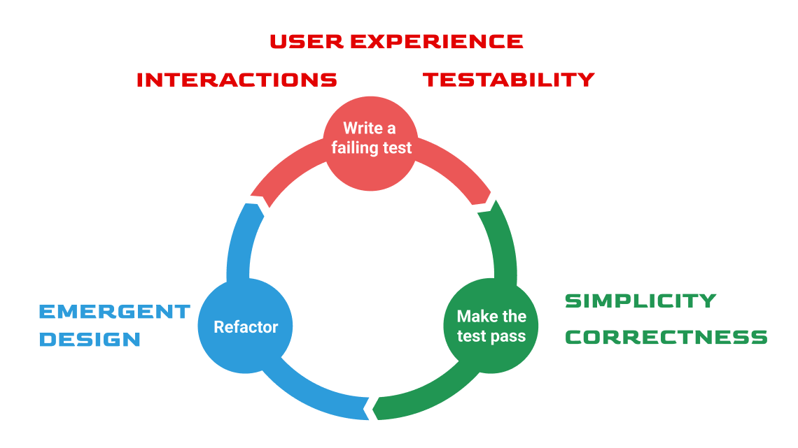
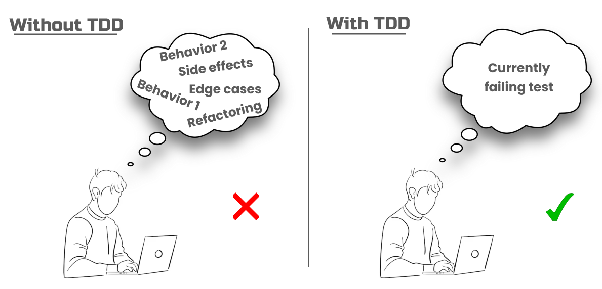

class: center, middle # The killing features of TDD --- # Silver bullet A bullet cast from silver is often one of the few weapons that are effective against a werewolf or witch - Wikipedia <div style="text-align: center;"> <img src="./assets/silver-bullet.png" alt="Example Image" style="width:500px;"> </div> ??? There is no silver bullet in our industry. But if I would need to name one, I would immedatiely say TDD. --- # Test-first mindset - The best way to trust your code - Validate that the tests is meaningful and unique - Preventing false negatives <span class="green-bg">Seeing the test failing is as important as seeing it passing.</span> --- # Most optimal path TODO: add slidesheet and info --- # High quality test suite - 100% code covereage - 100% behaviour covereage - Feedback about the design of the tests - Continuous Refactoring --- # Design methodology - Test are the first users of the - Simple design and correctness - Testability by design - Clean tests --- # Design methodology <div style="text-align: center;">  </div> ??? Red: In this phase, we always start with a failing test that is used to design the external view of our code. Our aim is to design a good user experience for our public APIs and meaningful interactions between our system collaborators. As the tests are the first user of the code, we test and design the API user experience before even implementing it. By doing so we can avoid expensive mistakes. A failing test helps understand how the code will be used. It makes us think about the interactions with other modules. When you start with a failing test, you evaluate the usability of your code. You verify if the API namings, signature, and side-effects are meaningful and clean enough. You check if those concerns make sense from the user's point of view. TDD shifts our focus from implementation details to high-level business behaviors, letting us focus on what really matters: producing useful software that makes our customers happy. TDD ensures testability by design. Because of the test-first principle, we are forced to have a design that is testable. Otherwise, we wouldn’t be able to write any failing tests for a code that isn’t testable. To make a behavior testable first we need to define its public API and expectations in a test. We make a contract describing what we are testing and what the expected behaviors are. Then by making the test pass, we fulfill the contract, resulting in a testable code. There is nothing that guarantees testable code when following test-last development. Green: Here we design for simplicity. Simplicity is one of the most important traits of quality software. Simplicity is the art of maximizing the amount of work not done. In this phase, we are forced to write exactly the code we need. The third law of TDD is the key to unlocking simple design: You are not allowed to write any more production code than is sufficient to pass the one failing unit test. We write the most minimal production code to fulfill the requirement expressed in our test. No unnecessary loggings, overengineering, or complex logic. We strive for minimalist code instead of a gold-plated solution. We go from the Red to the Green phase in the simplest way possible. Next to simplicity, TDD ensures correctness. We can have the most elegant code but if it doesn’t do what you expect from it, it’s just a valueless piece of code. No code is better than incorrect code. The code written with TDD does exactly what we want. It behaves according to the expectations specified in our tests. A failing test makes sure that our expectation is meaningful. A passing test means that our code is working. And finally, refactoring ensures that our design becomes simple Refactor: TDD is primarily about growing the design through continuous refactoring. Most of our design actions will happen in this phase. We develop the design by practicing aggressive refactoring. Here we care about lower-level design concerns such as: naming our software elements abstracting and encapsulating business logic removing duplication and applying other design principles. Many misconceptions about TDD are usually derived from the nature of the Refactor phase. TDD won’t tell us how to name our software elements or which patterns they should use in a given problem. It will just provide us with a framework to support our actions to be executed in a disciplined way. --- # Evolutionary design - Planning is useful - plans are useless - Fake it till you make it - Triangulation - Quick TDD cycles and short feedback loops <div style="text-align: center;"> <img src="./assets/evol-design.png" alt="Example Image" style="width:300px;"> </div> ??? TDD encourages the practice of evolutionary design. It's a practice of growing the system in a natural way, by adding the minimum amount of production code needed to satisfy the business requirements. It’s about continuously adjusting the design of our system while we are working on the solution domain planning is usefull: In software development, following strictly the initial architecture plan is a high way to a project failure. Designing and building software is an iterative and incremental process where the end result can differ by order of magnitude from the initial plan. Planning is useful. But plans are useless. Fake it till you make it: TDD has another compelling concept called “Fake it ‘till you make it”, contributing to the evolutionary design. The test code and production code don't grow at the same rate. The test code grows faster. The idea behind the concept is that instead of writing an intelligent implementation at first, we need to start with the simplest solution possible. This oftentimes means that we return hard-coded values in our production code. We commit a sin and do whatever it takes to implement it in the simplest way. Then we keep adding more tests and making them green by faking the results until it becomes obvious how to refactor to the actual implementation. It forces us to write new test cases until we are forced to come up with a generic design. As the test gets more specific, the code gets more generic. This is also called triangulation. In mathematics, triangulation is the process of determining the location of a given point based on two known points, by forming triangles. In TDD, we do the same: we use multiple tests to create a generic code. triangulation: it is a process to find a coordinate. It is the same in softwarte, we find the most optimal design by having multiple tests --- # Managing complexity - Managing complexity and people - Focusing only one thing at a time <div class="green-bg" style="text-align: center;"> "Test-Driven Development is a way of managing fear during programming" - Kent Beck </div> <br> <div style="text-align: center;">  </div> ??? Can a juggler hold 7 balls in the air? It is possible, but the complexity makes it easy to fail. The same happens when you try to keep many things in your head at once. Complexity often leads to mistakes. Test-Driven Development (TDD) fixes this. TDD reduces mental load and lets you focus on only one thing: • The currently failing test TDD helps manage complexity by taking baby steps and solving one little problem at a time. --- # TDD is FUN - Test-last is a chore - Test-last is only for verification - Test-last is for both design and verification <div style="text-align: center;"> </div> ??? And the last and my most favorite Test-last development loses most of the joy of writing tests. The joy of writing tests in Test-Driven Development comes from the sense of progress you get from doing it. TDD is a game-like feeling to write your code in a turn-based way, with exact goals to achieve. The outcomes are visible and immediate, continuously boosting our morale and creativity. A failing test gives you satisfaction because you successfully defined a behavior to implement. Making it green releases dopamine due to successful implementation. Refactoring will give you a sense of achievement as you can confidently refactor your code without breaking existing functionality. But the experience of test-last development is vastly different. The long feedback loops of test-last development suck all the fun out of the testing. It leads to untestable behaviors, reduced motivation, and increased risks. And this is probably the reason why most developers don’t like testing and don't do it with care. --- # TDD is FUN <div style="text-align: center;"> </div> --- class: center, middle # Z.O.M.B.I.E.S. --- class: center, middle ## What if I can't think of all the tests? ## How do I get started? --- # Z.O.M.B.I.E.S by James Grenning ### Z - Zero ### O - One ### M - Many (or more complex) ### B - Boundary behaviours ### I - Interface Definition ### E - Exceptional behaviours ### S - Simple scenarios, simple solutions --- # Z.O.M.B.I.E.S ### Z.O.M. - Complexity of tests ### B.I.E. - Test cases for each ### S. - Simple scenarios, simple solutions ??? S. - tells developer to write Simple scenarios, simple solutions --- # Shopping Cart Requirements ### Core Features: 1. Allow adding items to a shopping cart 2. Calculate the total price of all items in the cart ### Business Rules: 1. An empty cart should have a total of zero 2. Items can't have a price of zero 3. Max number of items of a cart is 5 --- # Z - Zero Start with the simplest test. ```cs [Test] public void EmptyCart_ShouldHaveTotalOfZero() { var cart = new ShoppingCart(); Assert.Equal(0, cart.CalculateTotal()); } ``` Boundary (B) behaviour is defined. Interface (I) is defined: - Interfaces exists for the benefit for the client - We use the interface first before there is anything behind it - The impls should not dictate the interface ??? TODO: we should apply B I and others here, think about what and where, check https://www.youtube.com/watch?v=dYM8HEacJgs again --- # Z - Zero Solve it with the simplest solution ```cs public class ShoppingCart { public decimal CalculateTotal() { return 0; } } ``` --- # O - One Test behaviour for single item ```cs [Test] public void CartWithOneItem_shouldHaveTotalOfItemPrice() { var cart = new ShoppingCart(); shoppingCart.AddItem(new Item(10m)) Assert.Equal(10, cart.CalculateTotal()); } ``` Interface (I) is defined: - AddItem(...) --- # O - One Implement behaviour for single item ```cs public class ShoppingCart { private Item _item; public void AddItem(Item item) { _item = item; } public decimal CalculateTotal() { return _items.Price; } } //Implementation of Item ... ``` --- class: center, middle #How about Exceptional Behaviour? --- # E - Exceptional Behaviour for One item Test behaviour for single item ```cs [Test] public void ShouldThrowError_whenItemSpecifiedWithZeroPrice() { var cart = new ShoppingCart(); var addItemAction = () => cart.AddItem(new Item(0m)); addItemAction.Should().Throw<ArgumentException>(); } ``` --- # M - Many Generaliation: Test behaviour for multiple items ``` [Test] public void MultipleItems_ShouldCalculateCorrectTotal() { var cart = new ShoppingCart(); cart.AddItem(new Item(1.0m)); cart.AddItem(new Item(2.0m)); cart.AddItem(new Item(3.0m)); cart.AddItem(new Item(4.0m)); cart.AddItem(new Item(5.0m)); Assert.Equal(15.0m, cart.CalculateTotal()); } ``` --- # M - Many Implement behaviour for multiple items ``` public class ShoppingCart { private readonly List<Item> _items = new(); public void AddItem(Item item) { _items.Add(item); } public decimal CalculateTotal() { return _items.Sum(item => item.GetPrice()); } } //Implementation of Item ... ``` --- # E - Exceptional Behaviour for Many items Test exceptional behaviour for multiple items ``` [Test] public void AddingMoreThanFiveItems_ShouldThrowException() { // Arrange var cart = new ShoppingCart(); cart.AddItem(new Item(10.0m)); cart.AddItem(new Item(10.0m)); cart.AddItem(new Item(10.0m)); cart.AddItem(new Item(10.0m)); cart.AddItem(new Item(10.0m)); // Act var action = () => cart.AddItem(new Item(10.0m)); // Assert action.Should().Throw<InvalidOperationException>(); } ``` --- # E - Exceptional Behaviour for Many items Implement exceptional behaviour for multiple items ``` public class ShoppingCart { private const int MaxItems = 5; private readonly List<Item> _items = new(); public void AddItem(Item item) { if (_items.Count >= MaxItems) { throw new InvalidOperationException("Cart cannot contain more than 5 items"); } _items.Add(item); } public decimal CalculateTotal() { return _items.Sum(item => item.GetPrice()); } } ``` --- # S - Simple scenarios, simple solutions - Keep your tests focused - Test only one thing - Single condition, path or behaviour ``` [Test] public void EmptyCart_ShouldHaveTotalOfZero() {...} [Test] public void CartWithOneItem_shouldHaveTotalOfItemPrice() {...} [Test] public void ShouldThrowError_whenItemSpecifiedWithZeroPrice() {...} [Test] public void MultipleItems_ShouldCalculateCorrectTotal() {...} [Test] public void AddingMoreThanFiveItems_ShouldThrowException() {...} ``` --- class: center, middle # How to write tests if I <span class="red-bg">don't know</span> what my code is supposed to do? --- class: center, middle # If you dont know what your code is supposed to do, how could you write the code?! --- # 2 practices from Extreme Programming (XP) 1.Learn and explore: - Spike: going through all the layers and discover what is needed to solve the problem end to end - Walking skeleton : putting the pieces together and see what we can do in a reasonable way 2.Throw it away - Start again with TDD <div class="green-bg" style="text-align: center;"> When you throw away your code, you throw away your typing, not your thinking </div> --- # What if I have many test case in mind? ### <span class="green-bg"> Use Task-List pattern</span> - Sticky note or in code comment - Write down the test cases you have in mind - Keep the list updated --- ### TODO: add example for Product domain, some searcher service etc, so we can use zombies and the killing features ---